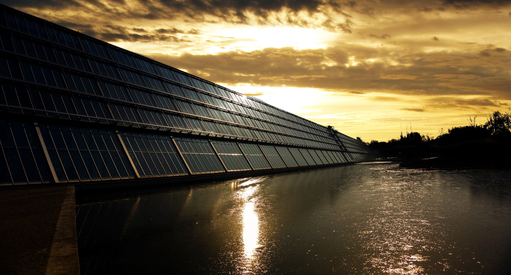
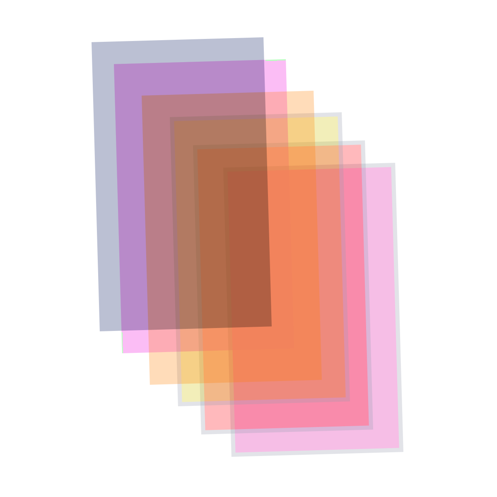

Energy is a vital part of the world and is integral to the future. It will be with us as long as we are heading in the right direction. Some countries like Iceland, Sweden, and the United Kingdom use mostly clean energy. These countries have been working hard to get where they are and aren’t stopping anytime soon. Conversely, there are many countries that use huge amounts of fossil fuels or use little to no electricity. It is almost like they are stuck in the past and can't progress. The main reasons for the shortage or no energy are localized deficiencies, war, and market manipulation. One of the main reasons for the shortage is a localized deficiency, which is when a country is unable to access the knowledge to find or use a certain resource. Another reason is war, war does not only affect the levels of energy in a country but also its economy, people and terrain. War affects the amount of energy in a country in many ways. The first way is wars are expensive and very difficult to get through. Governments have to buy and make supplies, ammunition, and vehicles. When they are spending all this time and money on the battlefield, they don’t have time to expand their energy levels and their technology. Another reason is when a country might have some energy they use it to expand their military for war and other things that might need the energy. The last reason is market manipulation, which is a type of market abuse where there is a deliberate attempt to interfere with the market and create artificial, false, or misleading appearances to the price of a product, security, and commodity. Energy is one of those products that are being made so everyone is buying products and solar panels to produce it. When buying them you can see market manipulation going on, especially with countries who are just getting into producing clean energy.
You’re probably wondering why energy-based companies or people looking to help the community should buy this product. A reason is to buy our product is that our world is falling apart, and we need to put it back together. These new solar panels will be profiting you and the world. These solar panels are ceiling windows that give you the energy you need. They benefit the world by using clean solar power instead of fossil fuels or coal. While they may cost more than regular solar panels, these panels let you see out into the world.
Our product uses an alternating grid pattern of glass and solar panels to let sunlight through while still generating energy. This allows consumers that don't have enough room to build a solar pannel array to generate solar power.